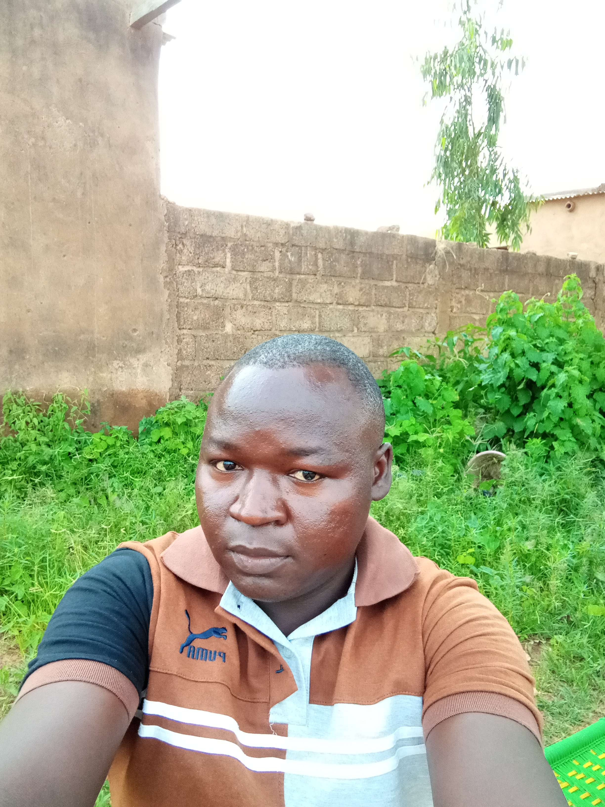

bienvenus
 Bienvenue sur mon site web
Je vous remercie sincèrement de votre visite.
Bienvenue sur mon site web
Je vous remercie sincèrement de votre visite.
Ce site a été conçu comme un espace d’échange,
de découverte et de partage, où chacun peut trouver les informations dont il a besoin de manière simple et agréable.
Mon objectif est d’offrir une expérience claire, accueillante et accessible à tous.
En parcourant les différentes pages, vous découvrirez
des contenus organisés avec soin,
que ce soit pour vous informer, apprendre,
vous inspirer ou simplement satisfaire votre curiosité.
Chaque section a été pensée pour répondre à vos attentes
et vous guider facilement vers ce que vous recherchez.
Je vous invite à naviguer librement dans le menu,
à explorer les rubriques et à psrendre le temps de découvrir
les ressources mises à votre disposition.
Votre satisfaction et votre compréhension sont au centre de mes préoccupations,
c’est pourquoi ce site évoluera régulièrement afin d’intégrer
de nouvelles informations,
des mises à jour et un contenu toujours plus enrichissant.
N’hésitez pas à me contacter si vous avez des questions,
un besoin particulier ou des suggestions pour améliorer cet espace.
Votre avis est précieux et contribue à rendre ce site plus utile pour tous.
Merci encore pour votre visite et très bonne navigation
Contactez-moi
A propos

Je suis ZONGO Augustin, passionné par le digital et les technologies qui transforment notre manière de communiquer, de créer et d’apprendre. Ce site a été conçu comme un espace pour partager mon expertise, mes projets et mes solutions digitales, afin d’aider particuliers et entreprises à se démarquer dans un monde numérique en constante évolution.
Chez "ZONGO Augustin Digital", nous mettons l’accent sur l’innovation, la créativité et l’efficacité. Que ce soit pour le développement de sites web, la stratégie digitale, la création de contenus ou le conseil en marketing numérique, chaque projet est traité avec soin pour offrir des résultats concrets et impactants.
Mon objectif est simple : rendre le digital accessible à tous et accompagner mes clients dans la réussite de leurs projets en ligne. Je crois fermement que le numérique est un puissant levier de croissance et d’expression, et mon rôle est de vous guider pour exploiter tout son potentiel.
Merci de visiter notre site
Compétences
* Développeur web débutant : bases en HTML, CSS et JavaScript.
* Compétences en design : création d’interfaces simples, harmonieuses et esthétiques.
* Expérience en enseignement : bonne communication et transmission des connaissances.
* Motivation et apprentissage continu dans le domaine du numérique.

Hobbies
J’aime profiter de mon temps libre pour
pratiquer des activités qui me permettent de me détendre
et de nourrir ma créativité.
Je m’intéresse particulièrement à la lecture,
qui m’aide à découvrir de nouvelles idées, ainsi qu’au sport,
qui me permet de rester actif et en forme.
J’apprécie aussi la musique
et les activités digitales comme l’exploration
de nouveaux outils technologiques.

Sports
- football
- Basketball
- Athlétisme
- Natation
- Cyclisme

Projets
- Création d’un site web personnel
- Développement d’une page “À propos” en HTML/CSS
- Conception d’un menu fixe et responsive
- Réalisation d’un formulaire de contact interactif
- Design d’une interface simple pour un portfolio